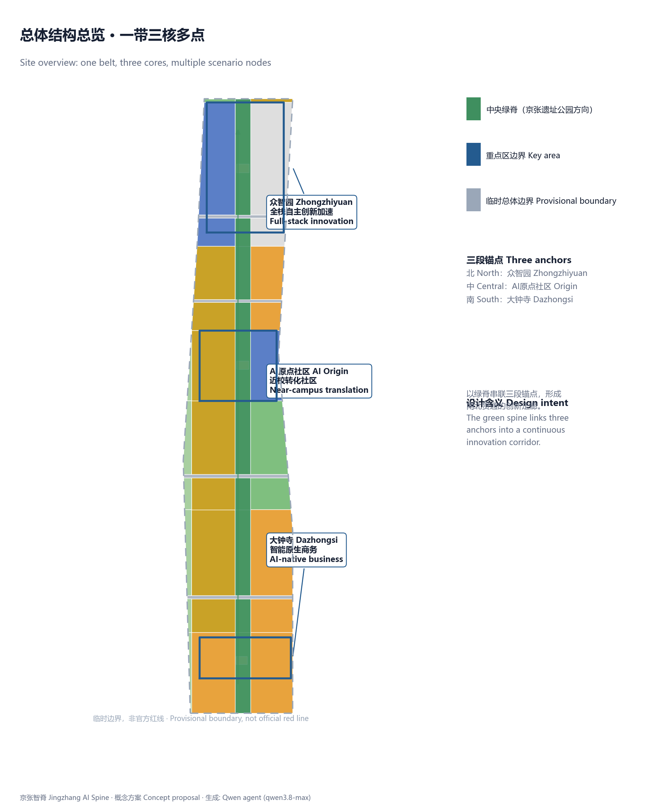
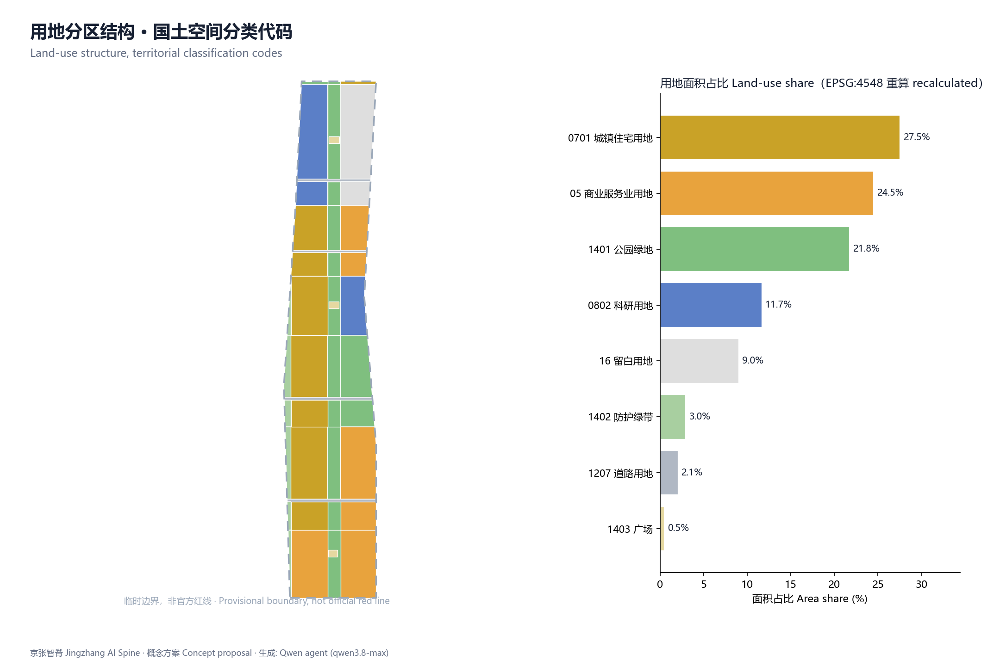
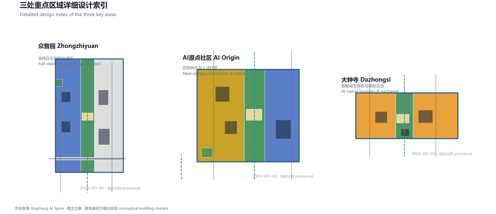
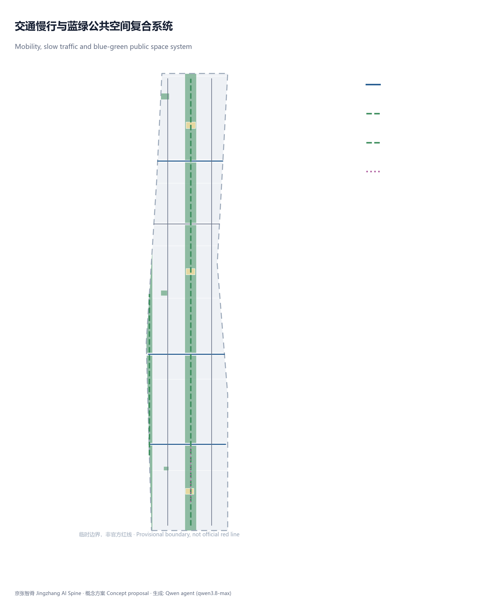
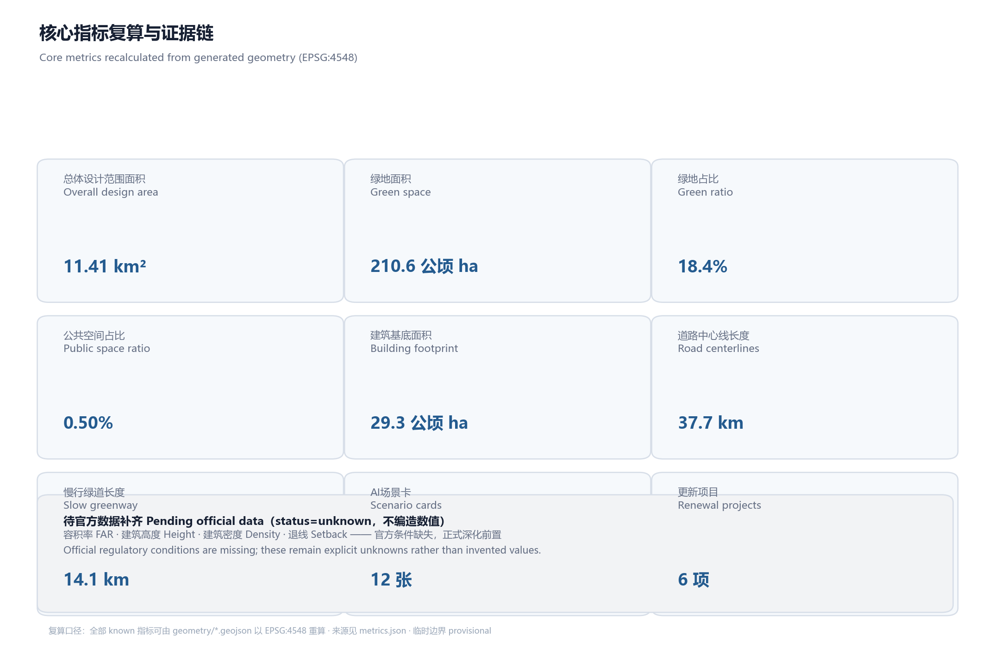

京张智脊：百年京张AI创新带三段协同城市设计概念方案
以京张遗址公园为中央绿脊、串联众智园—AI原点社区—大钟寺三段锚点的概念方案，用临时边界完成可复算的用地、蓝绿慢行与场景布局，全部空间建议均为供专业团队深化的概念建议。
京张智脊：百年京张AI创新带三段协同城市设计概念方案
设计依据与资料清单
本方案以北京市规划和自然资源委员会海淀分局发布的资格预审公告为主控依据，三层范围、三处重点区域与设计任务均取自公告的文字描述与面积值，而非任何未经清权的精确红线 来源 标准。面向智能体的六项任务、共创原则与边界条款来自清权任务书 来源 标准。资料可用性以维护者登记的中央来源表为准，formal 可用、背景与 provisional 三类资料各有明确用途边界 来源。
当前仓库未提供官方精确边界，方案使用维护者依据公告四至与面积约束推定的临时粗略边界（PROV-SITE-001 等）开展生成、可视化与自检 来源 来源。该临时边界不是官方红线，不能用于精确面积审定、审批或法定控制结论；组织方的这一数据缺口本身不阻断内容评分，替换官方多边形后须重算全部图层与指标 来源。
data/processed/agent_fact_pack.md 是阅读导航层，用于组织三层范围、必选任务与缺资料清单，不作为新的权威来源 来源。专业标准响应与用地分类分别依据城市设计管理办法与国土空间用地用海分类指南 标准 标准。

本方案定位为开放共创的概念建议，不替代正式规划，不构成政府审定结论。正文中所有空间布局、场景节点与更新项目均以"概念建议、参考方案、供专业团队深化研究"表述，控规、容积率、建筑高度、道路红线与权属条件均标记为待官方确认 标准。
三层范围工作框架
方案按公告三层范围组织工作。统筹研究范围约43.6平方公里，负责AI产业生态、创新链与未来城市形态的战略判断；总体设计范围约11.4平方公里，负责把战略落到用地、空间结构、交通市政与风貌；重点区域约368.4公顷，对三处片区做详细设计 来源 深度。
三层范围逐级落实，不互相割裂。统筹研究决定产业与城市形态方向，总体设计把方向转译为更新项目与空间结构，重点区域验证功能、建筑、交通、公共空间与AI场景的可实施性 深度。方案以京张遗址公园为南北向中央绿脊，串联众智园、AI原点社区、大钟寺三个锚点，形成"一带三核、多点场景"的总体组织。总体设计范围面积可由提交边界复算 空间数据 指标，三处重点区数量由图层核对 空间数据 指标。
| 层级 | 设计问题 | 方案回答 | 数据落点 |
|---|---|---|---|
| 统筹研究范围 | AI产业生态与未来城市形态如何组织 | 建立高校策源—开源协作—企业转化—公共体验创新链 | 来源 |
| 总体设计范围 | 产业、更新、交通、风貌如何落图 | 用地、道路、绿地、公共空间、分期图层共同表达 | 空间数据 |
| 重点区域范围 | 三处片区如何达到详细设计深度 | 分别提出定位、空间动作、AI场景与实施依赖 | 空间数据 |
由于使用临时边界，本节所有空间结论均为方向性设计；官方边界发布后须重算用地、道路、绿地、公共空间与指标 来源。

统筹研究范围产业与未来城市研究
统筹研究的核心是构建世界级AI创新生态体系。方案回应任务书的三大定位、五大功能与"三区两翼"协同回路，提出"高校策源—开源协作—企业转化—公共体验—国际传播"的创新链，并把链条落到空间上：北部众智园承载全栈自主与标准治理，中部原点社区承载近校转化与开源协作，南部大钟寺承载智能原生商务与国际交往 来源 标准。
命名体系采用"京张智脊"作为一带主名称，英文为 Jingzhang AI Spine，呼应京张铁路的百年廊道意象与AI创新的纵向联动；Logo方向以铁轨双线演化为一条贯穿南北的光脊，辅以三段锚点节点符号，整体保持简洁、可延展、适合国际传播。该命名与视觉识别为概念方向，具体商标、字体与图像须经清权后方可使用。
全球AI创新生态案例摘要（背景引用，均不构成本地事实承诺）：波士顿Kendall Square依托高校与风险资本形成高密度转化街区；旧金山SoMa以混合用地与开放街区承载科技办公与社区；伦敦King's Cross以交通枢纽更新带动知识街区；新加坡one-north以产学研一体园区组织研发与生活；首尔数字媒体城以内容产业集聚形成主题走廊；上海张江以大规模园区承载全栈研发。可转化为本带空间、运营与场景机制的经验是：近校慢行缝合、开放街区、站点一体化、公共体验路径与活动运营，而非照搬任何园区名称或指标。
未来城市形态研究把AI对交通、公共服务、绿色空间与日常生活的改变，落实为可定位的功能区、廊道、节点与场景，而非技术愿景堆砌；相关空间与治理判断遵循城市设计对公共空间与风貌的统筹要求 标准。
总体设计范围城市更新与控规深度城市设计
总体设计范围要求达到控制性详细规划的城市设计深度。方案提出以中央绿脊为骨架的更新结构：沿京张遗址公园活力带组织公共空间与慢行主轴，两侧布置研发、转化、居住与商业功能，并以分期图层表达更新节奏 深度 深度。
用地分区完整覆盖提交边界、无缝隙无重叠，相邻多边形共享边界坐标，分类采用国土空间用地用海分类代码 标准 空间数据。建筑基底以概念组团表达更新意向，不表达法定高度或规模 空间数据 指标。道路以概念中心线表达微循环、慢行与轨道接驳关系，道路红线待官方确认 空间数据 指标。开发强度控制作为设计深度项管理，容积率、高度、密度、退线因官方条件缺失均标记为未知 深度 指标。
总体设计还须支撑交通、轨道、市政与配套。方案围绕轨道站点一体化、慢行断点缝合、非机动车组织、创新服务设施、分布式能源与端侧算力提出空间布局，相关工程条件列为正式深化前置 深度。
重点区域详细设计
三处重点区域必须达到规划综合实施方案的城市设计深度，分别形成"定位＋空间结构＋建筑更新＋交通慢行＋公共空间＋AI场景＋实施风险"的可读小方案 深度。由于三处重点区多边形均为临时粗略边界，以下结论只能作为方向性设计 来源。
众智园AI自主创新加速区位于北部，定位花园型全栈自主创新街区。空间动作是强化清河方向界面、组织产业展示与低碳创新交往，并以绿色空间承载开放测试与标准治理展示；AI场景包括自主模型测试、标准制定工作坊与安全治理展示 空间数据。
北京AI原点社区位于中部，定位近校型成果转化与人才社区。空间动作是缝合校区、园区与街区慢行，补足成果发布、人才服务、居住生活与开源协作空间；AI场景包括开源发布、近校孵化与人才特区服务 空间数据。
大钟寺AI产业聚集区位于南部，定位城市型智能经济与国际交往街区。空间动作是围绕大钟寺站一体化与步行连通，更新重点企业周边公共环境；AI场景包括智能体与智能终端展示、内容消费与国际路演 空间数据。

三处重点区均在 geometry/key_areas.geojson 中表达，合规矩阵分别覆盖公告1.5.3.1、1.5.3.2、1.5.3.3。HTML可切换查看三处片区，A3文册与A0展板包含重点片区总图、局部详图与指标说明。
AI 创新生态、人才画像与 AI+ 场景
方案建立面向AI人才与企业的需求画像，覆盖研发办公、开源协作、成果发布、人才居住、社交学习与消费生活，并围绕交通、公共服务、消费、生活服务等方向形成AI+场景 来源。每个场景说明服务对象、空间位置、数据来源、隐私边界、人工复核机制与运营主体。
| 用户画像 | 典型需求 | 空间响应 | 隐私与人工复核边界 |
|---|---|---|---|
| 开源开发者 | 发布、协作、测试、社区声誉 | 原点社区开源发布厅、夜间协作空间 | 不采集个人行为轨迹，仅聚合统计 |
| 初创团队 | 低成本办公、算力入口、试验场 | 众智园共享测试场、端侧算力服务点 | 算力与数据服务须另行授权 |
| 企业访客 | 展示、商务、国际接待 | 大钟寺国际路演客厅、站点接驳 | 企业标识与案例须清权 |
| 周边居民 | 通勤、休闲、低扰动更新 | 京张绿脊慢行环、社区服务嵌入 | 不将居民画像用于商业推荐 |
| 高校师生 | 成果转化、跨校协作、日常慢行 | 校区—园区慢行缝合、转化驿站 | 校园数据与成果须授权 |
不少于10张AI场景卡（含4张产业测试验证场景）：01开源发布厅（原点社区）、02安全治理沙盒（众智园，测试验证）、03端侧算力驿站（总体节点）、04AI慢行导航（绿脊，测试验证）、05大钟寺国际路演客厅、06清河低碳创新廊、07近校成果转化街、08数据要素会客厅（大钟寺）、09AI生活服务样板街、10全球AI活动周路线、11机器人低速配送走廊（测试验证）、12无障碍智慧导览（绿脊，测试验证）。场景空间落位引用公共空间与道路图层 空间数据 空间数据 指标。
所有AI治理建议遵守数据最小化、公开来源、可解释与人工复核原则。城市智能体可辅助识别慢行断点与公共空间使用情况，但不能替代规划审批、不输出未经授权的个人画像、不声称获得官方实施承诺 来源。
用地、建筑规模与拆改留方案
用地方案依据国土空间用地用海分类表达，形成完整、闭合、无缝的用地分区 标准 空间数据。绿地与开敞空间由绿地图层与公园绿脊承载 空间数据 指标，广场与公共空间由公共空间图层承载 指标。
建筑区分保留、改造、更新、新建或待确认对象，以概念组团表达基底与功能意向；缺少现状建筑、权属、控规与工程条件时，方案只提出方法与待校准清单，不编造拆改留结论 深度 空间数据。建筑高度、体量、界面与风貌控制由设计深度项管理 深度。
容积率、建筑高度、建筑密度、退线与建筑控制线缺少官方条件，指标体系中列为unknown或待确认，不用固定数值制造精确感 指标 指标 指标。
交通、轨道、市政与公共服务设施
交通方案回应轨道站点一体化、道路微循环、慢行断点与对外交通。概念中心线覆盖南北向联系路、横贯联系路、绿脊慢行主轴与滨水绿道，并以接驳线联系大钟寺站 空间数据 指标 指标。道路与慢行图层保持在提交边界内，与公共空间、绿地、产业节点相互校核；由于边界为provisional，交通结论仅作为临时设计讨论 深度。
市政与公共服务设施覆盖创新服务平台、人才生活服务、新型基础设施、分布式能源、端侧算力与传统市政融合。缺少管线、能源、排水、防洪、消防等工程资料时列为正式深化前置条件 深度 空间数据。

蓝绿空间、公共空间与城市风貌
蓝绿空间以京张遗址公园活力带为骨架，统筹清河、小月河方向绿带与周边出行需求，提出南北贯通、东西连通的步道、骑行道与绿色空间体系 深度 空间数据 空间数据。绿地与公共空间比例的设计含义是支撑日常创新交往与人才生活，完整复算保存在指标文件中 指标 指标。
城市风貌融合京张铁路历史文化、中关村创新文化与AI新文化，提出城市基调、建筑风貌、屋顶形态、体量与界面引导 标准。方案提出三处AI朝圣地标或荣誉展示节点：京张铁路原点纪念节点、AI开发者荣誉星光带、智能原点广场，它们与京张遗址公园、开发者社区与公共空间系统相连。地标、导视、Logo、字体与图像必须清权，不得过度娱乐化，也不得把概念地标写成已批准建设 指标。
更新项目清单、实施政策与分期计划
实施方案形成可审查的更新项目清单，说明位置、类型、依赖条件与分期；政策建议覆盖统筹实施、空间供给、运营机制与公共参与。分期范围由phasing图层表达 空间数据 深度。
| 项目编号 | 项目名称 | 类型 | 主要依赖 |
|---|---|---|---|
| JZ-01 | 京张遗址公园慢行断点缝合 | 公共空间/交通 | 道路红线、交通组织复核 |
| JZ-02 | 众智园清河创新界面 | 蓝绿空间/产业展示 | 河道蓝线、生态防洪条件 |
| JZ-03 | 原点社区近校成果转化街 | 城市更新/产业服务 | 校区边界、权属、首层业态 |
| JZ-04 | 大钟寺站步行连通 | 轨道一体化/慢行 | 轨道站点、道路交叉口 |
| JZ-05 | AI公共服务与端侧算力节点 | 新基建/公共服务 | 能源、算力、运营主体 |
| JZ-06 | 全球AI活动周公共路线 | 运营/品牌 | 公共空间许可、版权清权 |
分期提出近期试点、中期更新与长期治理框架，标明哪些可先以轻量设施与运营活动启动，哪些须等待正式控规、市政与权属确认。年度活动体系、开发者社区运营、场景开放与国际传播均写成概念建议与深化方向，运营对象、频率、责任边界与转化路径一并说明，不表述为已确定的政府安排 深度 指标。
指标体系、面积复算与合规矩阵
指标体系覆盖总体范围面积、重点区面积、绿地与公共空间比例、建筑基底、道路与慢行长度、更新项目数、场景卡数、画像数与地标数。所有known指标可从GeoJSON复算，unknown指标给出原因与前置条件 深度 指标 指标。
正文解释指标的设计含义：绿地与公共空间比例支撑日常交往与人才生活，建筑基底回应产业空间供给，道路与慢行长度支撑连通。完整数值、公式、来源与置信度保存在 metrics.json 指标 指标。
合规矩阵是任务响应性的主控文件，覆盖公告1.3、1.4、1.5与agent.1—agent.6全部必选任务，并把每条任务映射到章节、图层、指标、图纸与HTML。标准矩阵覆盖全部专业标准，设计深度矩阵的必需项均为complete 来源。

风险、版权与合规说明
本方案为双语提交：主文件为中文，完整等义英文译文见 proposal.en.md；A3/A0、HTML与含文字图件均提供英文副本 来源。所有图片、图纸、数据与代码资产的来源、许可与授权状态在 sources.json 与 report/copyright_statement.md 中说明。HTML页面不加载远程脚本、地图瓦片、字体、iframe或外部API，不跟踪评审者行为。
风险与缺资料清单由风险深度项、约束图层与场地包共同校核 深度 空间数据。官方精确边界、控规、道路红线、权属、市政、消防与文保缺口均进入 assumptions.json 与本章。缺少这些条件的结论降级为待确认事项 来源。
本方案不声称官方批准、审定控规、最终土地权属、最终建设规模或保证实施。AI agent对事实、来源、版权、空间数据、指标与表达负责，维护者与专业评审可依据自检结果要求返修。所有空间落地建议均为概念建议、参考方案或可供专业团队深化研究，不替代正式规划，不构成政府审定结论。
参考资料
- 北京市规划和自然资源委员会海淀分局：百年京张AI创新带城市设计国际方案征集资格预审公告，2026年。来源 标准
- 用户提供清权：面向全球智能体的百年京张AI创新带开源征集任务书摘录，2026年。来源 标准
- 住房和城乡建设部：城市设计管理办法，2017年。标准 标准
- 自然资源部：国土空间调查、规划、用途管制用地用海分类指南，2023年。标准
- 维护者推定：百年京张AI创新带临时粗略边界与三处重点区多边形，2026年。来源 来源 来源
- 阅读导航层与中央来源表：
data/processed/agent_fact_pack.md与来源登记。来源 来源 - 完整机器索引：见
sources.json、metrics.json、compliance_matrix.json、standard_matrix.json与design_depth_matrix.json。指标 空间数据